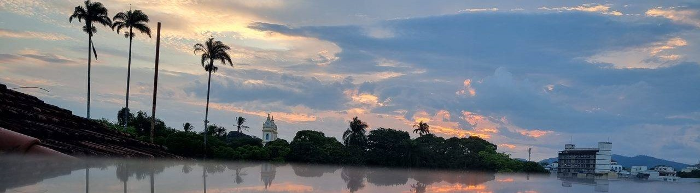

Brasil Verdejante: Riqueza da Flora Nacional Encanta o Mundo com Mais de 46 Mil Espécies Nativas 🌿 Da Amazônia ao Cerrado, país é campeão em biodiversidade vegetal e guarda tesouros naturais ainda inexplorados.
Brasília, 16 de junho de 2025 – O Brasil mantém seu posto de destaque no cenário ambiental mundial como um dos países mais ricos em biodiversidade vegetal. Com mais de 46 mil espécies catalogadas de plantas, a flora brasileira se espalha por biomas diversos, como a Amazônia, Mata Atlântica, Cerrado, Caatinga, Pampa e Pantanal — cada um com suas peculiaridades, endemismos e belezas naturais únicas.
Espécies como o ipê, o pau-brasil, a vitória-régia e o buriti representam apenas uma fração do imenso acervo botânico nacional. Estima-se que muitas espécies ainda nem sequer tenham sido descritas pela ciência.
Apesar da exuberância, a flora brasileira enfrenta ameaças crescentes: desmatamento, expansão agrícola, queimadas e mudanças climáticas pressionam ecossistemas inteiros. Organizações ambientais e universidades alertam para a necessidade urgente de conservação, reflorestamento e valorização dos saberes tradicionais ligados ao uso sustentável das plantas.
Especialistas reforçam que proteger a flora é também proteger a vida: "Cada planta extinta representa uma oportunidade perdida para a medicina, a alimentação ou o equilíbrio ambiental", afirma a botânica Mariana Ferreira, da USP.
Com tamanho patrimônio natural, o Brasil segue sendo símbolo de potencial ecológico e esperança verde — um verdadeiro santuário botânico a ser preservado para as futuras gerações.